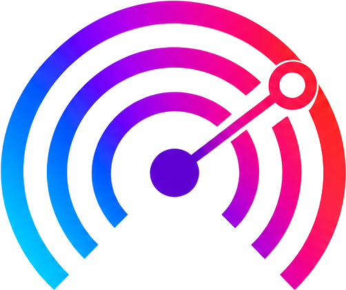

Программный помощник водителя с планом развития в экосистему для повседневных задач в такси.

Первоначальный MVP
Первый транш
MAU за три месяца (цель)
Подтвердить работающий, полезный и законный продукт. Проверить реальную платёжную конверсию и тарифный микс. Затем добавлять новые сервисы только с отдельной unit-экономикой и юридической готовностью.
В комплект входят эта записка, презентация инвестору, подробная стратегия на 24 страницах и формульный финансовый калькулятор Excel.
ФИЛЬТРОН помогает водителю оценить финансовую целесообразность доступного заказа до принятия решения: ориентировочная цена поездки, пробег до пассажира, ожидаемый маршрут, комиссии, топливо, амортизация, затраты времени, чистая прибыль и ROI.
Реалистичную оценку «стоит / не стоит», параметры автомобиля, журнал доходности и наглядную информацию о возможных последствиях решения для приоритета.
Сервис не гарантирует сохранение приоритета при пропуске любого заказа. Он не обходит алгоритмы и не получает закрытые данные без законного разрешения.
| Статья | Результат |
|---|---|
| Цена заказа | 800 |
| Комиссия | -160 |
| Подача + маршрут: 16 км × 12 ₽ | -192 |
| Дополнительные затраты | -48 |
| Остаток до иных неучтённых затрат | +400 |
Сценарий пользователя: 85% активных водителей приобретают доступ; каждый платящий оплачивает 24 дня в месяц; средняя выручка — 85 ₽ на оплаченные сутки. Это целевые допущения, а не подтверждённые продажи.
| Период | MAU | Выручка | Опер. результат |
|---|---|---|---|
| Месяц 1 · пилот | 250 | 433 500 ₽ | +280 470 ₽ |
| Месяц 2 | 375 | 650 250 ₽ | +453 205 ₽ |
| Месяц 3 · цель | 500 | 867 000 ₽ | +625 940 ₽ |
| Позже · масштаб | 1 500 | 2 601 000 ₽ | +2 007 820 ₽ |
MAU × 85% × 24 × 85 ₽ − 3% эквайринг − 6% условный налог − 9% моделируемые выплаты по рекомендациям − 65 000 ₽ фиксированные расходы − 40 ₽ × MAU.
В операционный результат не включены отдельные капитальные вложения на MVP, маркетинг, новые сотрудники, неучтённые возвраты и товары; распределение прибыли участникам ООО возможно только по корпоративным решениям.
Работы: 24.11.2026–23.01.2027. С 24.12.2026 по 05.01.2027 включительно команда отдыхает, работы не планируются.
| Период | Транш | Результат |
|---|---|---|
| 1 / 24 ноя–7 дек | 85 000 ₽ | Android-телефон, сервер в РФ, VPN, AI, сайт, прототип |
| 2 / 8–23 дек | 55 000 ₽ | ООО, Android, геолокация, расчёт затрат |
| 3 / 6–14 янв | 55 000 ₽ | QA, расчётное ядро, приватность, анализ приоритета |
| 4 / 15–23 янв | 55 000 ₽ | Подписки, тестирование, пилот и релиз |
| Статья | Рубли |
|---|---|
| Тестовый Android-смартфон | 20 000 ₽ |
| VPS/БД в РФ · 1-й месяц | 10 000 ₽ |
| Защищённый VPN для команды | 6 000 ₽ |
| ChatGPT/Codex | 8 000 ₽ |
| Claude Code | 8 000 ₽ |
| Тестовый номер и SIM | 2 000 ₽ |
| VPS сайта / настройка | 3 500 ₽ |
| Домен / хостинг / HTTPS | 2 500 ₽ |
| Android-прототип и расчётные экраны | 20 000 ₽ |
| Резерв | 5 000 ₽ |
Это минимальный операционный режим ООО после запуска: один оплачиваемый директор, внешняя бухгалтерия, рабочее место и базовая серверная инфраструктура. Полноценный штат разработчиков не включён.
| Статья | Расход / мес. |
|---|---|
| Зарплата директора, начислено | 30 000 ₽ |
| Страховые взносы · плановый лимит | 9 200 ₽ |
| Рабочее место / коворкинг | 6 000 ₽ |
| Расчётный счёт и банк | 1 200 ₽ |
| Бухгалтерское сопровождение | 5 000 ₽ |
| VPS РФ, БД, резервные копии | 6 000 ₽ |
| AI-инструменты | 3 000 ₽ |
| Связь, домен, уведомления | 1 200 ₽ |
| Мониторинг, техсервисы | 1 800 ₽ |
| Операционный резерв | 1 600 ₽ |
| ИТОГО | 65 000 ₽ |
Не включено: маркетинг, штатная разработка, API штрафов, аренда полноценного офиса, расходы таксопарка, закупка товаров и налог на основной оборот — они вынесены в переменные/дополнительные бюджеты.
Android, биллинг, геолокация, расчёт стоимости/ROI. План коммерческого релиза — 23 января 2027 года.
Госномер/СТС, API поставщика, напоминания, дата последней проверки.
Оплата по кнопке через банк/PSP; без хранения данных карт и штрафных платежей у ФИЛЬТРОН.
Купоны АЗС/АГЗС, мойки, химчистка, запчасти; CPA и размещения для партнёров.
После соглашения с платформой, проверки 580-ФЗ и пилота подключений.
Сначала опрос аудитории и 4–5 простых SKU; затем официальные закупки в Китае и реализация в РФ через приложение, маркетплейсы, таксопарки и партнёрские точки.
| SKU | Шт. | Landed / шт. | Продажа / шт. |
|---|---|---|---|
| Термокружки | 60 | 450 ₽ | 1090 ₽ |
| Кепки | 60 | 220 ₽ | 790 ₽ |
| Блокноты | 70 | 125 ₽ | 390 ₽ |
| Ароматизаторы | 100 | 120 ₽ | 490 ₽ |
| Комплекты микрофибры | 80 | 165 ₽ | 590 ₽ |
Капитал пилота
Оборот при распродаже
Модельный результат
Состав бюджета: 74 150 ₽ закупка, 35 000 ₽ образцы/дизайн/запуск, 25 000 ₽ денежный резерв. Маркетплейсы, доставка, промо, налог и риски возвратов учитываются отдельно в модели.
85 000 ₽ в первом транше и три транша по 55 000 ₽ на следующие этапы. Переход к расходованию согласуется по фактическим достижениям, а не по обещанной доходности.
Работающее ядро; законная модель данных; 50+ тестеров; 250 MAU пилота; верификация 85% конверсии и 24 дней; CAC и платёжные возвраты.
Мониторинг штрафов, оплата, клуб, парк и GOODS запускаются отдельными инвестиционными решениями после договоров и положительной unit-экономики.
Инвестор рассматривается как участник ООО, а не кредитор. Предварительная структура долей 70/30 подлежит согласованию и оформлению документами. Нет гарантированного срока возврата денег или обещания выплаты прибыли в первый месяц.
Дополнительные материалы: strategy.pdf — развёрнутая стратегия 24 страницы, finance.xlsx — формульная модель, calculator.html — интерактивные сценарии.